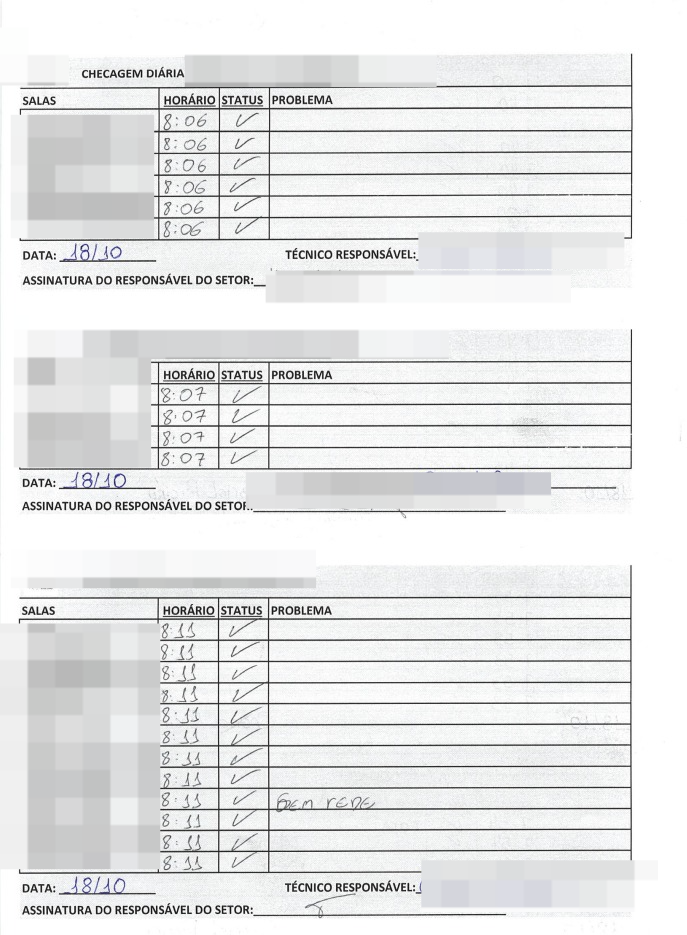
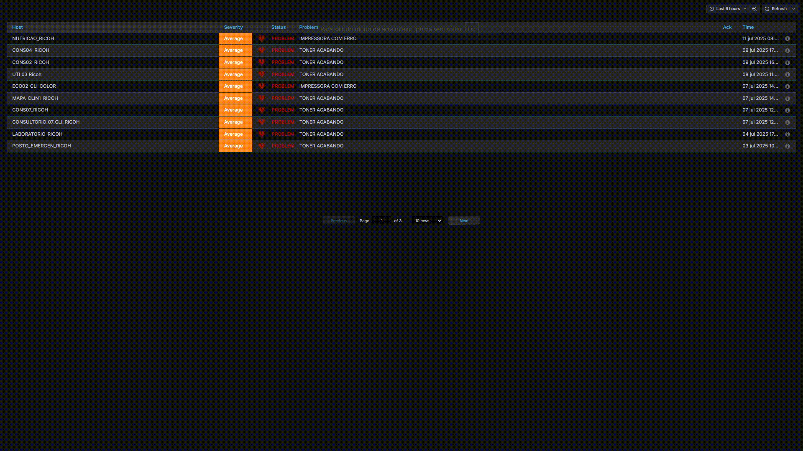
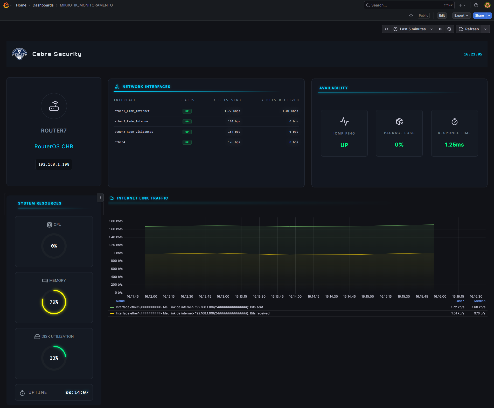
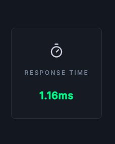
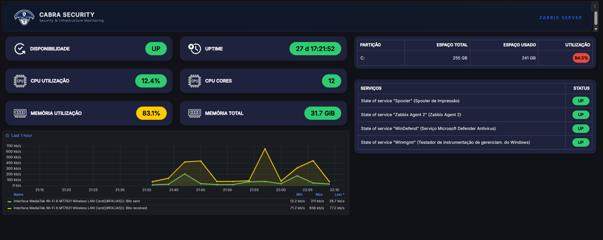
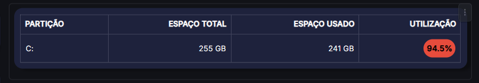
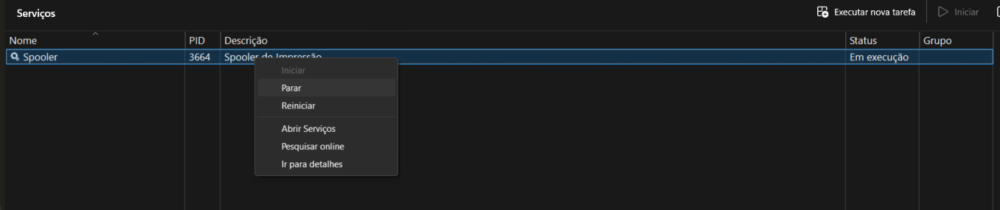
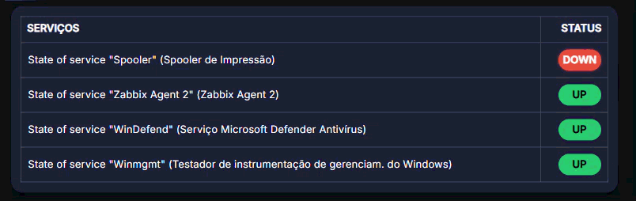

Dashboard - Monitoramento de impressoras
Dashbord para monitoramento em tempo real de impressoras corporativas via snmp. Acompamento de disponibilidade, nível de toner e logs.
> Problema a ser resolvido
A checagem do status das impressoras era feita manualmente, com visitas presenciais duas vezes ao dia em setores críticos como UTI, Emergência e Laboratórios. O responsável precisava imprimir relatórios de consumíveis, deslocar-se entre os setores e verificar visualmente a necessidade de troca de toner ou presença de falhas. O processo era repetitivo, impreciso e consumia horas de trabalho diário da equipe de TI, além do alto volume de impressões realizadas ao imprimir o "relatório de consumiveis".

> Solução Implementada
Dashboard desenvolvido, sendo exibido no televisor na sala da TI:
A solução acompanha, em tempo real, o nível de toner e o status das impressoras em todos os setores do hospital, eliminando a necessidade de rondas.

> Resultados Estratégicos
- Aperfeiçoamento do suporte; redução de 80% nas visitas presenciais.
- Liberação de tempo da equipe de TI para demandas estratégicas.
🚀 Dashboard de Monitoramento Mikrotik com Alertas Visuais em Tempo Real
Dashbord desenvolvido usando o plugin HTML Graphics do grafana, que permite controle total dos elementos, o equipamento monitorado é o route OS que está sendo virtualizado no Eve-NG
Problema
Ambiente sem visibilidade clara de latência e falhas em tempo real, dificultando atuação rápida da equipe de TI.
> Objetivo do monitoramento
- ✔ Redução de tempo de diagnóstico de falhas.
- ✔ Alertas visuais dinâmicos para tomada de decisão rápida.
- ✔ Visualização em tempo real de latência e disponibilidade.
> Dashbord

Com total controle de construção dos componentes, incluindo lógica, comportamento e visual dos alertas.
Ex:

<section class="icmp_responseTime container">
<svg xmlns="http://www.w3.org/2000/svg" width="30" height="30" viewBox="0 0 24 24" fill="none" stroke="currentColor" stroke-width="2" stroke-linecap="round" stroke-linejoin="round" class="lucide lucide-timer-icon lucide-timer">
<line x1="10" x2="14" y1="2" y2="2"/>
<line x1="12" x2="15" y1="14" y2="11"/>
<circle cx="12" cy="14" r="8"/>
</svg>
<span class="title">Response Time</span>
<span class="value" id="responseTime_value">/span>
</section>
Acesso o indice no arquivo json recebido do zabbix: const responseSerie = data.series[0]?.fields[3];
const responseText = htmlNode.getElementById('responseTime_value')
const responseSerie = data.series[0]?.fields[3];
if(responseSerie && responseSerie.values){
📌 Captura do último valor de latência vindo do Zabbix:
const responseValorSegundos = responseSerie.values.get(responseSerie.values.length -1);
valorMs = responseValorSegundos * 1000;
📌 Adiciona sting ms no final e deixa apenas com duas casas decimais.
responseText.textContent = valorMs.toFixed(2) + "ms"
📌 Aplicação de lógica de severidade (OK / Warning / Critical):
if(valorMs < 50){
responseText.style.color = "#00ff88"; // Verde (Excelente)
} else if (valorMs >= 50){
responseText.style.color = "#ffcc00"; // Amarelo (Médio/Atenção)
} else{
responseText.style.color = "#ff4b4b"; // Vermelho (Alto/Crítico)
}
} else {
responseText.textContent = "Aguardando";
responseText.style.color = "#666";
}
De maneira dinâmica, com base nos valores recebidos, malipulo como os itens são apresentados, no exemplo abaixo, alterei minha regra momentaneamente para explificar, de modo que se o valor recebido for > que 0.50, chama uma class do css que contem a animação que pode ser observada abaixo.

Dashboard de Monitoramento para Servidores Windows com Foco em Disponibilidade e Performance
Este projeto visa monitorar servidores windows que devem ter alta disponibilidade.
Problema
Ambientes Windows frequentemente apresentam degradação de performance, alto consumo de recursos e falhas de serviços críticos sem visibilidade centralizada, dificultando a atuação rápida da equipe de TI.
> Objetivo do monitoramento
- ✔ Garantir visibilidade em tempo real da saúde do servidor.
- ✔ Monitorar consumo de CPU, memória e disco.
- ✔ Acompanhar status de serviços críticos.
- ✔ Reduzir tempo de resposta a incidentes.
> Dashbord

O dashboard realiza monitoramento contínuo de recursos e serviços, gerando alertas visuais em cenários de degradação ou indisponibilidade.
Armazenamento cheio

Nesse dashbord de exemplo temos um servidor windows com o disco C: cheio, se não tiver sendo monitorado pode acarretar em indisponibilidade da máquina.
Com a visualização do alerta de maneira proativa, o responsável pelo ativo acessará imediatamente para realizar uma limpeza nos arquivos.
Disponibilidade de Serviços
Em ambientes corporativos, todos os serviços devem ter alta disponibilidade e em caso de falha, devem ser detectada mesmo antes do usuário ser afetado!
Para exmplificar, vamos monitorar o serviço de Spooler de impressão, se ele não estiver em execução, as impressoras dos colaboradores/clientes não irão imprimir(só se estiver configurada localmente.)
Para exemplificar, parei o serviço da máquina que está sendo monitorada!

Cerca de 1 minuto com o serviço parado, a notificação já pode ser observada no dashbord.

Esse tipo de falha, se não monitorada, impacta diretamente operações do dia a dia, como usuário sem conseguir imprimir.
Com essa abordagem, é possível identificar falhas antes do impacto ao usuário, permitindo uma atuação rápida e reduzindo indisponibilidade dos serviços.